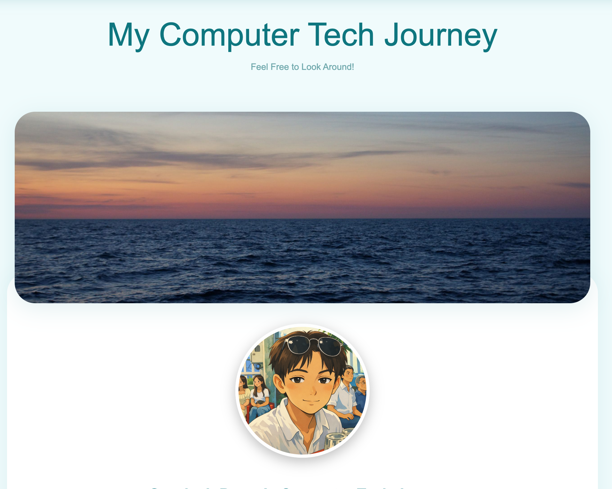
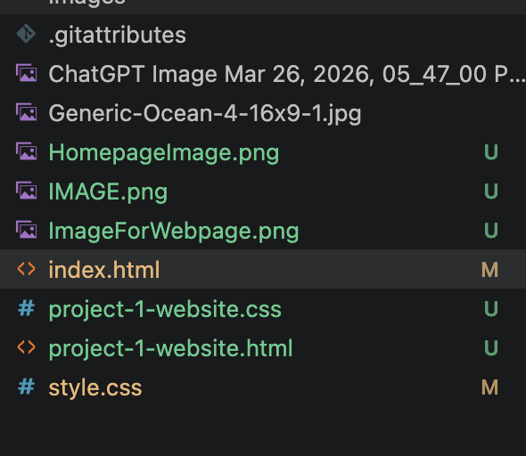
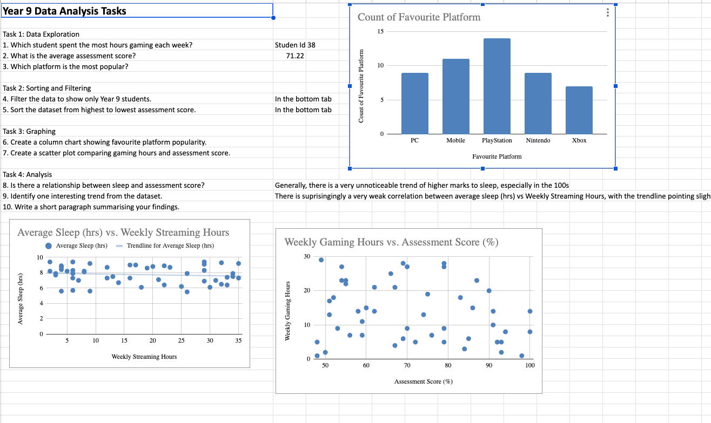

About This Project
This was my first Computer Technology project in which I had to design the first version of the webpage you are reading this on now.

This was my first Computer Technology project in which I had to design the first version of the webpage you are reading this on now.

This website is a collection of all the skills of coding in HTML and CSS throughout this first term of computer tech. I developed the site around my love for surfing, so I had a clear image of what I wanted it to look like. I also organised a wireframe blueprint for my website before I started coding, which made the process much easier by breaking the webpage into boxes.
The hardest part of the project was learning all of the CSS properties and how to use them. I had to do a lot of research and trial and error to figure out how to make the website look the way I wanted it to. I also had to learn how to keep on coming back to flexbox to make sure everything worked well together.

Throughout the project I used a range of tools like Visual Studio Code, Sublime Text, Git and GitHub, most of which I had used before. I also used Claude Code and my father helped me to review my code and catch any obvious errors, but not to write anything for me. It was useful for spotting small mistakes I had looked past, especially when I had someone to rubber duck with.
But there is still a lot I want to improve about the site going in the future. The main thing is adding way more JavaScript to make the site more fun to play with and be on. I also want to add things like a working nav menu on mobile or small animations that make it feel like somebody really put effort into it. Additionally looking back at my CSS it is very bloated and could definently be cut down. Finally, there are also a few sections I ran out of time to finish properly, and just optional parts that would make the design nicer overall. But overall I am really happy with how it turned out and I am excited to keep improving it as I learn more and practice.